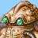

This section lists all characters from the series. Be careful, some information in this page contains sploilers.
| A-D | E-H | I-L | M-P | Q-T | U-Z |
|---|---|---|---|---|---|
| Agaman Meluvet | Edda Roshgarde | Langley | Martha Garalas | Quail | Urgak |
| Agram | |||||
| Alador | |||||
| Alexis | |||||
| Alvin | |||||
| Antha | |||||
| Antui | |||||
| Argane Destatte | |||||
| Ayato | |||||
| Azamine | |||||
| Barbatta | |||||
| Beatrice | |||||
| Bengham | |||||
| Beryllus | |||||
| Black Knight | |||||
| Bobo |
Agaman Meluvet, King
King of Meluvet. He invades Garalas to try and expand his empire and retake what was once Meluvetian. He is kind only to those who know him well. Meluvet takes advantage of the Xaertrix's mind control abilities and threatens to use them on Ridman if Garalas resists. He is the son of King Pellios.

Agram
A strange robot found by Nastra on Mount Bujizu. No one knows where it came from. It loves to clean and help people. Agram is an Orobot who was built by the Orogai to perform particular tasks. Agram's task is to clean and keep everything in working order. Agram follows Nastra for most of his adventure and accompanies him on the mission to Sai Geradon. Upon meeting Barbatta he leaves Nastra but soon realizes that Nastra is his friend and understands what friendship is.
Alador
Once upon a time there lived a man named Alador, also known as the Green Journeyman. He travelled the world his whole life, taking notes on all of the the flora and fauna he saw along the way. Perhaps his most famous discovery is that of the remarkable Orlie, a large flightless bird which comes in a variety of different colours. Around thirty years ago he was exploring the Murphey Forest, a vast woodland area stretching across central Meluvet and most of the Elerian Continent. It was here that he made his most incredible - and last - discovery. He stumbled across a Chimera, a fearsome monster which devours human souls. Alador, the Green Journeyman, was never seen again.
Taken from 'The Adventures of the Green Journeyman'
Alexis
Pirate from Veramonde. Sister of Leon and Leonardo and cousin of Circan. When Nastra is looking for the gunpowder she invites him to drink with her until she realizes that he is the murderer of Kaiser Granstem, then she decides to attack him. Later she goes to the Liberation Army's castle to return Shotan's pendant and joins Nastra's army.
Alvin
The husband of Ursula. He has been very supportive of her ever since she started her business in Vietta.
Antha
One of the original Liberation Army members, she manages Nastra's battle group. She lived in Nagura and used to watch Ryoko when she was a child and her father was away or busy. When Ryoko joined the Liberation Army she felt that she should go with her to assist her.
Antui
Born in Vietta he journeyed south where he met Nina in Yanuke and they fell in love. On a climbing trip in Garalas they were seperated and he tried to make his way home but got lost and ended up in the village of the Karepp tribe. Before he headed home to the west he heard about Valmot and decided to try and stop him. This is where he met his demise.
Argane Destatte
Son of Kaiser Granstem who becomes kaiser when his father is murdered by Nastra. His mother was an unaligned elf and so he inherited his father's dark side and became a Dark Elf, whilst his sister Serynia became a Holy Elf taking her mother's peaceful traits. When Argane takes the throne he plans a secret alliance between Veramonde and Krisdea to create an almighty nation of power but his plans are thwarted when his half-brother Rautzen is defeated by the Liberation Army.
Ayato
A servant of Letira of the Beast Faction in Higanasu. He and Rai protect the way to Mogosta. He is more mobile than Rai and is often scouting the surrounding area while she waits at the checkpoint. His animal companion is a silver tiger named Rushi. Ayato is skilled in wind magic. He leaves Letira to join Kima to become more independant and move on.
Azamine
Friend of Fuba, she owns the Orbcraft shop in Chirsten. Nastra first meets her when he is in Chirsten with Fuba and she teaches him how to use Orbcraft. Azamine used to visit Kakus once every few weeks to teach young kobolds magic, including Ossal and Serth. Later she joins Kima's Alliance.
Barbatta
Mysterious traveler who has been searching for the Legion Sword with his companions Pergris and Meest for over five years. He finally finds it in the Tinstren Mines during a worldwide human and Orogai war but it changes his life forever. Following these events he remains cocooned in the Legion Sword's chamber under Tinstren Castle until the time is right, when he escapes and does battle with the 2nd Legion Master - Nastra.
Beatrice
Nastra's mother. One of Kaiser Granstem's farm girls. She was raped by Granstem one day and thus Nastra was conceived. Following this tragic event she was locked in a cell until Nastra was born and then, after the discovery that the child was male, was killed.
Bengham
Priest of the Church of Dansa in Eastern Krisdea. Father Bengham set up the church when the church in Marael City was demolished by the Council.
Beryllus
At the dawn of mankind's dominance over the world there was only one ruler. Her name was Beryllus. Eventually her greed for power grew to be too great and her minions turned against her and formed the different their own various groups and factions. Her rule was later known as the Black Dynasty.
Black Knight
A mysterious and terrifying warrior residing in the Black Forest. He has past connections with Shotan and fights Nastra and Shotan in the pirates' caves in Veramonde. He later returns to the Black Forest where he is defeated and disappears until he attacks Shotan one final time in Vietta and dies.
Bobo
Pet and loyal servant of Dulgan. Bobo is a Squat Dragon - a flightless beast with a hard punch. He is not really aware of his role in the Rebellion and was presented as a gift to Ridman from Dulgan.
Brohmus
One of the gods of Avalon. He is the God of Progression.
Buku
Buku is a baby dragon hatched from a dragon's nest in the woods around Lashu village. Unfortunately, Kima and companions had previously killed the parent dragon in self-defense and so the baby was orphaned. He named it Buku and looked after it.
Chamiko
A travelling elf who decided to set up an inn in the Beast City Mogosta. He likes to travel and wherever he goes he tries out the local inn, leaving a message in their guestbook expressing his thoughts.
Chibiki
A warrior from Veramonde who meets Nastra at the Champion's Arena. She later helps him get back into Veramonde. Her sword is one of the largest hand weapons ever forged by her father Gatts , a blacksmith who lives alone in the mountains of Veramonde.
Chinju
Chinju is a ferryman in Jenouille. He is employed by Kwaida of the Red Eagle to try and lead Kima into a trap. Later, after the fall of the Red Eagle, he becomes the ferryman for the Alliance.
Chiri
Once a barmaid in Marael City, she left because it was depressing her. Ridman meets her at Kakria and she joins the Rebellion. She is one of the few Fellans to travel so far from her home.
Cid Regule
One of Meluvet's powerful generals and leader of the Whole Moon Guard, a force established to defend the king of Meluvet and the capital city Bargon. Within him is the 'true power of the Meluvetian'. After the Midland Wars he escapes north and spends some time in Higanasu, where he is promoted to General of the Blood Moon Knights. He has a wife and son who left him and moved to Winstram for unknown reasons.
Circan
Cousin of Alexis , Leon and Leonardo . He is a wannabe pirate and sailor who helps Nastra cross the Tigerfoot River by building him a boat.
Clett
She is the only Amun'Rah monk in the temple on the north-eastern plains. Her sole purpose is to explain the story of Valmot .
Csozhia
The leader of the Orogai during the time when they reigned supreme in the world. He lead the Orogai to safe and rich lands and was based in Tinstren Castle in Krisdea. Some say his superiority caused him to grow massive wings.
Dadelia Roshgarde
The widow of Edda , and mother of Kima and Eijin . She is a great cook and when Kima founds the Alliance she becomes head chef of the army. She cares for her children very much and tries her best to be close to them after the loss of their father.
Dansa
The God of Life and Death. He governs all species in the world and controls the general flow of existence. He has two followings - the Church of Dansa (peaceful group who believe people should live in harmony) and the Amun'Rah Clan (religious fanatics who would give their lives to fulfill the wish of Dansa). He was formerly simply the God of Death, also known as the Executioner, until he murdered Destreil and Uschorisce .
Destreil
Formerly the Goddess of Judgement, also known simply as 'The Judge', until she was murdered by Dansa . Her role was to decide the fate of all living creatures. If it was decided they should die, then the execution was carried out by Dansa. Destreil was often associated with Ysud , the God of Balance, and it is said that before her death they became lovers.
Diablos
A powerful demon from Higanasu. Is able to manipulate people by possessing them, as he does with Pocken , the mayor of Darp. It once attacked the Genryu village but the elder ( Harce ) was spared in exchange for his soul.
Diminia
A faerie who has travelled a long way from home. He is fascinated by the flow of time.
Dolan Yustan III
As the general of the Royal Seiryu Knights his dedication is to his king - Zogoran . When Zogoran is killed by Barbatta he follows Kima who is fighting to set everything straight again. He is extremely loyal and a firm atheist.
Donfan
Lives alone in the Black Forest after his wife Eliza was killed. He warns travelers of the danger. Donfan is also a master of Metrition (the process of advancing Orbs).
Doris
Once the armorer of Mayor Pocken . She works for Ridman when he meets her. Doris was born in Harbrynd and travelled north to find business.
Dulgan
King of the Dragon Knights, he resides in Dracoriga. Dulgan is in love with Larla but lacks confidence in that department. He lends Ridman the help of the dragons when Lodaria threatens to destroy Ceratapin Castle and in return asks for Ridman to rescue Larla when she is kidnapped by General Kamza . He later proposes to her and they marry after the war.